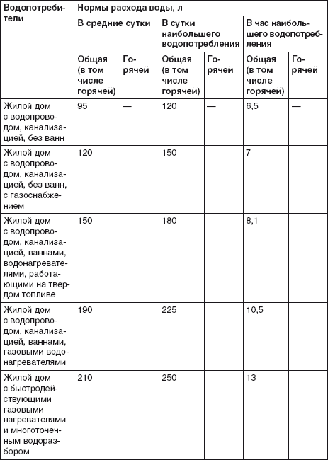
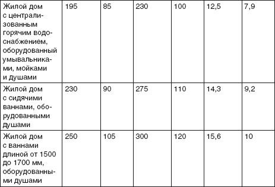
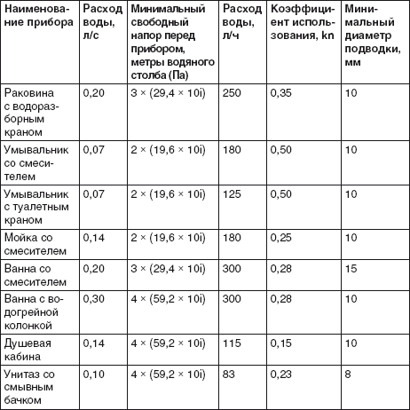

Сколько воды нужно.

Прежде чем решаться на устройство той или иной системы водоснабжения, необходимо определить, сколько же воды понадобится для вашего загородного дома. При этом совершенно не требуется сложных расчетов, не нужно вспоминать, сколько воды расходуется при приготовлении пищи или принятии душа каждым членом вашей семьи. Все уже определено. Существует специальный норматив, определяющий нормы расхода воды потребителями, – СНиП 2.04.01–85* «Внутренний водопровод и канализация зданий. Системы внутреннего холодного и горячего водоснабжения». В нем указаны нормы расхода воды потребителями, и именно из него следует исходить, планируя водопотребление своего дома. Ориентируясь на данные нормы и правила, можно определить не только требуемое количество воды, но и инженерное оборудование, которое сможет обеспечить вас этой водой (табл. 1.1).
Таблица 1.1.
Нормы расхода воды потребителями из расчета на одного человека [1]


Как видим, воды на одного человека требуется немало. К тому же водопотребление зависит еще и от того, работает человек или нет, а для детей предполагается отдельный расчет. В Методических рекомендациях по формированию нормативов потребления услуг жилищно-коммунального хозяйства (утверждены Приказом Минэкономики России от 6 мая 1999 г. №?240) приводятся такие данные индивидуального потребления воды в сутки: для работающего взрослого человека – 122 л/сутки, для неработающего взрослого человека – 135 л/сутки, для ребенка – 146 л/сутки.
И такое количество воды требуется только для стандартных нужд: приготовления пищи, влажной уборки помещений, питья, принятия душа/ванны и т. д. Ну а если вы решили устроить в своем доме бассейн? В соответствии со СНиП 2.04.01–85* «Внутренний водопровод и канализация зданий. Системы внутреннего холодного и горячего водоснабжения» вам потребуется 10 % от вместимости бассейна для ежедневного его пополнения. А если ваш бассейн будет снабжен душевыми кабинами – для принятия душа после плавания, то дополнительно вам потребуется еще вода: 100 л/сутки, в том числе 60 л/сутки горячей воды из расчета на одного пловца, принимающего душ. Собственная баня требует обеспечения минимум 180 л воды для одного человека, в том числе 120 л горячей воды.
А ведь есть еще приусадебный участок, который нуждается в поливе, газоны и клумбы, плодовые и декоративные деревья и кустарники, оранжереи, теплицы, парники, домашние животные, домашний скот и птица. Все это – водопотребители, нужды которых следует учитывать, планируя систему водоснабжения и канализации.
Так, для полива приусадебных участков рекомендуется следующая норма расхода воды: 3–4 л/сутки на 1 м , при этом продолжительность полива считается равной 6 ч (3 ч утром, 3 ч вечером). Для грунтовых, зимних и весенних теплиц рекомендованная норма расхода воды составляет 15 л/м , а для стеллажных зимних теплиц и парников – 6 л/м . Корове потребуется 50–60 л воды в сутки, молодняку крупного рогатого скота – 25–30 л, свинье – 12–15 л, курице – 0,8 л, индейке – 1,2 л, гусям и уткам необходимо 1,6 л воды в сутки.
Простейший расчет показывает, что для комфортного проживания в загородном доме необходимо устройство надежной системы водоснабжения, причем если проживание не ограничивается приездами в выходные, то требуется или подключение к централизованной системе водоснабжения (если она имеется и способна обеспечить бесперебойное снабжение водой в необходимом количестве), или индивидуальная система водоснабжения с устройством подачи воды в дом и на участок.
Кроме необходимого количества воды, следует учитывать еще и нормы водонапора – они также определены строительными нормами и правилами (табл. 1.2).
Таблица 1.2.
Нормы водонапора для различных точек водоразбора [2]

С помощью вышеприведенных данных определяются расход холодной воды, требуемый при таком расходе свободный напор воды перед точкой водоразбора, а также минимальные диаметры водопроводных труб-подводок к точкам водоразбора. Следует также знать, что свободный напор воды над поверхностью земли у ввода в дом должен составлять 10 м водяного столба при одноэтажном здании, если же этажей больше, то на каждый этаж добавляется по 4 м водяного столба.
Следует учитывать, что при устройстве автономной системы водоснабжения потребуется установка водонапорного бака.
Установка такого оборудования на чердаке приводит к дополнительной нагрузке на перекрытия (к примеру, семье из шести человек потребуется водонапорный бак объемом 300 л (с учетом ванны), а если отказаться от ванны, то можно обойтись баком объемом 180 л, но, уменьшая нагрузку на перекрытия, таким образом, приходится существенно уступать в комфорте), кроме того, следует утеплить чердак, чтобы в холодное время года вода не замерзала.
Поэтому, чтобы не было неприятных неожиданностей, настоятельно рекомендуется узнать все о централизованной системе водоснабжения (если она имеется в поселке) и обследовать участок, чтобы выяснить, имеется ли на нем вода, на какой глубине она залегает, какого качества и в каком количестве.